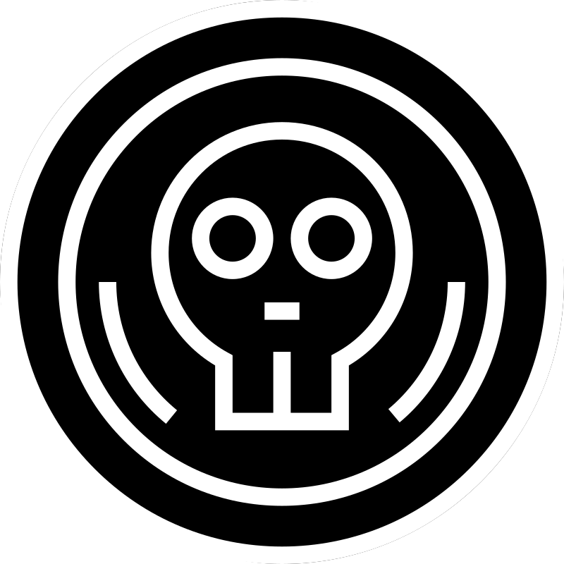

Amoako
"Il rischio è il gioco, il guadagno il trofeo"
La famiglia Amoako domina l'industria dell'estrazione mineraria, gestendo vaste flotte e appaltatori che estraggono risorse preziose dalla pericolosa superficie di Wandacker. Sebbene siano ricchi e militarizzati, non sono mai riusciti a liberare la superficie di Wandacker dalle orde di gnoll che la infestano. Senza possedimenti terrestri, gli Amoako operano da stazioni spaziali altamente efficienti, diventando indispensabili per la loro esperienza nella gestione delle stazioni. Nonostante il loro potere, sono costantemente contestati del conglomerato Waytir-Yugani.

Kumi

Jojo
Ablä

Kode

Caillot
"Dalla frusta al pane."
La famiglia Caillot è nota per essere i coltivatori del sistema, fornendo il cibo per la maggior parte della popolazione. Nonostante non possiedano ricchezza o potere militare pari alle grandi famiglie, la loro influenza è sottile ma significativa. Dalla loro dimora su Tebara, una luna agricola ingegnerizzata, i Caillot mantengono una posizione neutrale e spesso decisiva durante le trattative inter-familiari. Tuttavia, la loro immagine di pace è macchiata da una realtà più oscura: le loro terre sono coltivate da schiavi, e il loro regno é una brutale piantagione

Michel

Daques

Claudette

Katia

Maeva

Richard

Jacquille

Juliette

Gabriel

Philibert

Audrey

Carxus
"Dove finisce il mondo, plasmiamo l'infinito"
La famiglia Carxus è una piccola società specializzata nella costruzione di spelljammers, navi magiche in grado di attraversare lo spazio. Tuttavia, la loro esistenza é costantemente messa alla prova dai potenti Ntsu, che mirano a subordinarli e controllare il flusso delle spelljammer nello spazio. Il loro sogno è creare una nuova generazione di navi che esplorino oltre i confini conosciuti, ma la loro sete di libertà potrebbe essere un rischio per tutto il sistema.

Usko

Rauni

Heikkilä

Grayshine
"Oro e potere, come alba e giorno."
I Grayshine sono i padroni indiscussi della ricchezza nello Stardom. Dalla loro fortezza su Deimos, accumulano e proteggono immense riserve d'oro e ricchezze, facendo affidamento su una vasta rete di alleanze per mantenere la loro posizione. Sebbene non comandino eserciti vasti, il loro vero potere risiede nella capacità di controllare il flusso economico dell'opazio, influenzando le sorti di imperi e famiglie con un singolo investimento o prestito.

Oakley

Alice

Ryan

Ashton

Hai
"Figli del conflitto, padroni delle ceneri"
La Casa di Hai è una delle famiglie più giovani dello Stardom, salita al potere attraverso una brutale guerra civile. Governano un pianeta diviso tra quattro popolazioni rivali: i drow, i thri-kreen, i nani sotterranei e gli elfi astrali. Sebbene la loro autorità sia riconosciuta, le tensioni tra queste fazioni sono costanti, complicando ulteriormente il loro governo. Tuttavia, la scoperta della polvere Ghasis, una potente sostanza arcana, nel sottosuolo del loro pianeta potrebbe trasformare le loro fortune.

Munire

Arstul

Kesk
"La purezza nella sofferenza"
La famiglia Kesk abita la luna oscura di Hophus, dove il sole non splende mai. Isolati e xenofobi, venerano Torog, il dio del dolore, e basano la loro cultura sulla adulazione della sofferenza e sull'oscurità. Sebbene evitino contatti esterni, sono maestri nell'arte della guarigione, offrendo i loro servizi in cambio di oro e sacrifici.

Oven

Line

Vegar

Trude

Roar

Ingrid

Simen

Eline

Mitsumoro
"Scritto col sangue"
I Mitsumoro sono una delle tre famiglie più potenti dello Stardom, dominando il pianeta di Jetaras, il più ricco e popoloso del sistema. Vivono una vita di edonismo, legati al culto di Asmodeus; ogni cittadino di Jetaras è vincolato da accordi che lo legano per contratto alla famiglia, e le città ultra moderne di Jetaras rappresentano un microcosmo di ambizione e disperazione. Nonostante la loro decadenza, i Mitsumoro sono implacabili e astuti, mantenendo il controllo attraverso una fitta rete di inganni e contratti.

Koga

Sakuma

Konoe

Yuuki

Shijou

Tokimori

Ntsu
"Chi tutto rivela, tutto perde"
La famiglia Ntsu governa dalle ombre, dominando il Faro, l'unica scuola di magia avanzata nel sistema. Devoti a Vecna, dio dei segreti e della non-morte, preservano l'arcana conoscenza dalle mani di chi considerano indegni. I loro studenti e laureati vengono monitorati per evitare fughe di segreti magici. Grazie al loro controllo sui morti e sulla magia, i Ntsu mantengono un dominio temuto e rispettato, con le loro due branche di intelligence d'élite, l'Occhio e la Mano, pronte a eliminare qualsiasi minaccia al loro potere.

The Eternal

The Courtship

The Undead

Ousssek
"Nel nome di Lei"
Gli Ousssek sono la famiglia dominante tra i drow, devoti a Lolth e al perfezionamento della loro società attraverso conflitti interni costanti. La loro società si basa sui Duelli del Destino, che rafforzano i meritevoli e eliminano i deboli. Estendono il loro potere attraverso asteroidi e stazioni, con la loro flotta che prioetta la loro forza nelle profondità dello spazio. La loro rete di assassini, il Punto Rosso, è conosciuta in tutto l'opazio, portando a termine omicidi per mantenere il potere e l'influenza della famiglia.

Demryd

Tolne

Bhodvamu

Arakne

Ehosse

Arveeth

Rasaily
"Conquista, distruggi, domina"
La famiglia Rasaily serve come forza di polizia per l'intero sistema, reprimendo rivolte religiose e popolari e mantenendo l'ordine interno. Pur presentandosi come una famiglia indipendente, sono strettamente legati ai Wueng, l'unica famiglia che rispettano e ascoltano. La loro abilità nella soppressione violenta delle ribellioni li rende un pilastro fondamentale nel mantenere la stabilità dello spazio.

Aadarsh

Khem

Badal

Bibhaakar

Rivera
"Nati per dominare"
I Rivera dominano la luna desolata di Allenia, dove governano una popolazione goblinoide in miseria. Mantenuti al potere anche grazie il costante aiuto della famiglia Ousssek, sono incaricati di mantenere il controllo su questa popolazione bellicosa e ribelle, avendo trasformato la luna in una prigione a cielo aperto per dissidenti politici e criminali. Le loro navi sono l'unico mezzo di fuga da questo mondo brutale e senza speranza.

Shah

Baldev

Ahelza

Shawel
"La forza sta nel metallo, l'anima nella fucina"
Nonostante siano una famiglia piccola e apparentemente insignificante, i Shawel hanno trasformato la luna desolata di Erebos in un centro di artigianato magico senza pari. Le loro creazioni -spade, armature e altri oggetti magici- sono famose per la loro potenza e rarità, e hanno garantito a Beca Haider la possibilità di salire fra i più alti ranghi della società del sistema.

Beca Haider

Siona

Sifu
"Caos Deos"
La luna governata dai Sifu è costantemente sconvolta da disastri naturali, portando a una cultura profondamente religiosa e frammentata. Senza un esercito convenzionale per evitare conflitti interni, la famiglia Sifu si affida agli Ousssek e ai Ntsu per la protezione e offre la propria terra come campo di prova per maghi e strateghi. La loro fragile autorità é costantemente messa alla prova dal fiume costante di disastri e cataclismi che colpiscono il loro mondo.

Tala

Mataio

Teulia

Eseta

Masina

Lalago

Gianieri

Sudriz
"Dal popolo, per il popolo, con il popolo"
La famiglia Sudriz è vista come l'epitome della mediocrità all'interno della complessa gerarchia dello Stardom, inferiore alle altre in quanto unica società democratica. Né eccellendo né fallendo in alcun settore, i Sudriz si distinguono per la loro stabilità senza ambizione. Governano un mondo in equilibrio, dove pianificano meticolosamente ogni aspetto della loro società ogni cinque anni, assicurandosi che ognuno all'interno della loro dura società possa avere il necessario per sopravvivere.

Milana

Marija

Suzana

Luka

Vukašin

Stozav
"Nessuna catena, nessun limite."
La famiglia Stozav governa Hoter, una luna di illegalità e vizio dove ladri, pirati e bande governano. La famiglia gestisce un vasto impero criminale, fornendo droghe e sostanze illegali in tutto lo Stardom. Uno dei loro prodotti più famigerati è l'Hosshine, un allucinogeno potente e distruttivo. Ciononostante, le loro alleanze con potenti individui all'interno del sistema, unite con il loro scarso interesse a infilarsi nei giochi di politica delle altre famiglie, assicurano una silenziosa tolleranza del resto della Confraternita.

Sparticus

BLUB

Burkov

The Coon

Tru

Derry

Wueng
"In pace in guerra, in guerra in pace"
La famiglia Wueng è una delle più formidabili dello Stardom, con il loro potere radicato in una forza militare impareggiabile. Comandano la flotta più grande e ben addestrata, affiancata da centiania di draghi. Il loro mondo, Draconia, è una forgia per le anime dei suoi abitanti, dove ogni individuo o diventa parte della macchina bellica o finisce ad essere uno schiavo dei draghi. La loro stretta su Tiamat (ottenuta in un modo misterioso quasi 300 anni fa) e la loro fedeltà culto di Bane li rende una forza inarrestabile e temuta, il cui unico valore è la vittoria sul campo di battaglia.

Sun Hui

Feng

XIa De

Peng Hai

Lei Ping

Bai Ai

Lei Lim

Luo Da

Xiang Biao

Xian Ai

Zolinath
"Il falso cade, il vero resta"
I Zolinath sono i principali arbitri di giustizia nello Stardom, governando la luna di Zimurn con un pugno di ferro. La loro società è guidata da potenti Giudici, incaricati di mantenere l'ordine e di eseguire le sentenze. L'élite, nota come gli Argaonne, sono rispettati ed usati in tutto il sistema per la loro totale incapacità di mentire, fungendo da garanti di verità nelle negoziazioni e nei processi legali fra diverse famiglie.

Prasantha

Égide

Alexis
La Mano
"Nel nome di Dio"
La mano é la più recente aggiunta fra i regnanti del sistema. Saliti al potere dopo la misteriosa decaduta dei Virtaten, coloro che precedentemente governavano El-Beth-El, sono adesso alla ricerca di opportunità. Sarà il loro un breve esperimento, o scriveranno un nuovo importante capitolo della storia?

Arren
Hor

Demir

Darius

Minerva